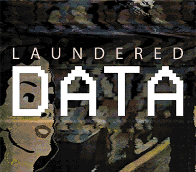

Unmasking Biases in Pre-Trained Transformers with Laundered Data
The Dirty Truth: The Biased and Unsettling Low-Functioning Pre-Trained Transformers We’re Building Our Future On 🔮 Have you ever put a red shirt in the white load? Pink everywhere, right? That’s what we’re dealing with here. I totally understand viewing the world through rose-colored lenses, but this is a stretch when our future depends on it. From virtual assistants to recommendation systems, pre-trained transformers have become a ubiquitous presence in our lives and underneath virtually ever
The Dirty Truth: The Biased and Unsettling Low-Functioning Pre-Trained Transformers We’re Building Our Future On 🔮
GPTGenerative Pre-trained TransformerIn the Lexicon →Have you ever put a red shirt in the white load? Pink everywhere, right? That’s what we’re dealing with here. I totally understand viewing the world through rose-colored lenses, but this is a stretch when our future depends on it. From virtual assistants to recommendation systems, pre-trained transformers have become a ubiquitous presence in our lives and underneath virtually every piece of software in just under a year, closer to nine months. Every corner of the Earth is down with GPT, yeah you know me. These powerful language models, capable of generating human-like text, have revolutionized various industries. Their generative powers create fuel for all the other software to ingest, digest, and expel at a rate that continues to climb each day. However, beneath their polished exterior lies a concerning reality: the biased and unsettlingly low-functioning pre-trained transformers we are building our future with. Let me separate the lights from the darks and the cold from the hot, for you. So fresh and so clean, clean ✨
Taken to the Cleaners

We have learned how to launder money and now we’re laundering data; it’s easier to manufacture and worth a great deal more. Laundered Data refers to information that has been cleansed, processed, and made suitable for use in machine learning algorithms. While this practice may seem innocuous, it can lead to biased outcomes and perpetuate societal injustices. The increasing reliance on pre-trained transformers, which are trained on vast amounts of data, exacerbates this issue. These transformers, although touted as groundbreaking AI models, are not immune to the biases ingrained in the data they are trained on. The gateway is Data Laundering and now as a result of large language models, it has graduated. In today's data-driven world, laundered data has become a pervasive problem.
However, pre-training of LLMs is conducted in a self-supervised manner using massive datasets of unlabeled text data that have been filtered to contain pre-existing language patterns1,2 . The Open Pre-trained Transformers (OPT) library provides pre-training code and detailed log books that implement and document the training process, providing invaluable insights into LLM training1 . Another example is how synthetic data can be artificially produced with transformer models, using NVIDIA NeMo as an example3 . Do you know how Big Tech companies train their models and build their transformers?
Let me explain the process:
- First, they create or support a non-profit organization that focuses on creating the necessary datasets.
- These organizations have more flexibility in using copyrighted material because they are research-oriented and non-profit.
- Once the dataset is ready, these tech giants can use it to benefit financially.
Still not convinced? Let's talk about Stable Diffusion. Many people think that Stability AI is responsible for its creation, but that's not entirely true. In reality, the esteemed Ludwig Maximilian University of Munich developed it, with a generous donation from Stability. The writing is all over the Github wall of Stable Diffusion and the evidence of this collaboration illustrates how the bending compass continues to guide us in the wrong direction. In the name of Freedom and our convenience.
Understanding Pre-Trained Transformers
125 MThe OPT library provides a suite of decoder-only pre-trained transformers ranging from 125 million to 175 billion parameters4,1Pre-trained transformers are large language models (LLMs) that are pre-trained on massive datasets of unlabeled text data in a self-supervised manner1,4, in order to recognize the patterns, structures, and meanings of language. Before exploring their biases and shortcomings, it is essential to understand their working. This pre-training phase enables them to generate coherent and contextually relevant responses to user queries. The OPT library provides a suite of decoder-only pre-trained transformers ranging from 125 million to 175 billion parameters4,1 . The transformers package by Hugging Face provides direct access to a multitude of pre-trained LLMs, including models for causal or masked language modeling, machine translation, sentiment analysis, and natural language inference5 . The pre-training of LLMs is conducted in a self-supervised manner, and the details of pre-training procedures are beyond the scope of this post1 .
The transformer architecture is the fundamental building block of all LLMs with transformers, and it was introduced in the paper "Attention is all you need"6 . The transformer architecture is based on the attention mechanism, which allows the model to look at all the input and output words simultaneously and figure out how they're related6 . The transformer model family includes models that only use the encoder or decoder, while others use both2 . Pre-trained transformers can be used for a variety of natural language processing tasks, including text generation, question answering, and sentiment analysis7 . Pre-trained transformers can be used for a variety of natural language processing tasks, including understanding, text generation, question answering, and sentiment analysis7 .
Biased Data: The Root Cause
The biased nature of pre-trained transformers stems from the biased training data they are fed. Machine learning algorithms learn from the data they are exposed to, and if this data is biased, the resulting models will reflect and perpetuate those biases. Biased training data can manifest in different forms, such as gender, racial, or socio-economic status biases. For example, if a pre-trained transformer is predominantly trained on text data that portrays certain genders or races in a negative or stereotypical manner, it is likely to exhibit biased behavior in its responses.
The impact of biased data on pre-trained transformers is far-reaching. When faced with biased input, these models may generate outputs that reinforce stereotypes or discriminatory beliefs. This can have significant implications in sensitive areas such as hiring processes, customer service interactions, and content moderation. Moreover, the biases ingrained in pre-trained transformers can perpetuate systemic inequalities and further marginalize already underrepresented groups.
Unsettlingly Low Functioning
Beyond biases, pre-trained transformers also suffer from low functioning. While they excel at generating coherent and contextually relevant text, they often lack true understanding and common sense reasoning. These models lack a genuine comprehension of the world, relying solely on statistical patterns learned from training data. Consequently, they may produce inaccurate or nonsensical responses when faced with complex or nuanced queries.
The limitations of pre-trained transformers become apparent when confronted with ambiguous or morally challenging scenarios. These models may provide inadequate or inappropriate suggestions, lacking the ability to navigate ethical dilemmas or make nuanced judgments. This deficiency in functionality poses significant challenges when relying on pre-trained transformers for critical decision-making processes.
The Consequences of Laundered Data

The consequences of using biased and low-functioning pre-trained transformers are wide-ranging and potentially detrimental. In domains where these models have significant influence, such as content recommendation algorithms or automated decision-making systems, biased outcomes can perpetuate discrimination, exclusion, and societal divisions. For instance, biased language models may recommend news articles or products that align with users' existing beliefs, reinforcing echo chambers and limiting exposure to diverse perspectives.
Moreover, the deployment of laundered data8 in public policy or criminal justice systems can have severe repercussions. Biased models may deny opportunities and lead to unfair sentencing and profiling based on things like race and gender, which can create greater inequality and go against principles of fairness and justice.
Ethical Concerns and Responsibility
Addressing the biases and low functioning of pre-trained transformers requires a collective effort and a sense of ethical responsibility. Developers, researchers, and organizations must recognize their role in shaping the future of AI and take steps to ensure fairness, transparency, and accountability in their practices.
One crucial aspect is the need for diverse and representative training data. By including a wide range of perspectives, experiences, and demographics in the training data, the potential for bias can be minimized. Additionally, establishing clear guidelines for human reviewers who participate in the data labeling and model validation process can help prevent biased judgments from seeping into the training data.
Transparency is another key consideration. It is essential for developers and organizations to provide clear explanations of how their pre-trained transformers work, including their limitations and potential biases. This empowers users and stakeholders to make informed decisions and understand the underlying mechanisms that shape the AI systems they interact with.
Overcoming Bias and Improving Functionality

While the biases and low functioning of pre-trained transformers pose significant challenges, progress is being made to address these issues. Researchers and practitioners are actively exploring techniques to mitigate biases in training data and improve the models' understanding of context and real-world scenarios.
One approach is to incorporate data preprocessing techniques that identify and mitigate bias in training data. This may involve carefully curating diverse datasets, anonymizing sensitive attributes, or applying debiasing algorithms during the training process. By taking these steps, the likelihood of biased outputs from pre-trained transformers can be reduced.
Fine-tuningProcess of adapting a pre-trained AI model to a specific task or dataset.In the Lexicon →Advancements in model training and fine-tuning also play a crucial role in improving functionality. Iterative feedback loops, incorporating human reviewers, and refining the training process based on real-world use cases can help narrow the gap between statistical patterns and true understanding. By continually refining and updating pre-trained transformers, their ability to generate accurate and contextually appropriate responses can be enhanced.
It is important to acknowledge that pre-trained transformers also have their benefits. They offer efficiency and time-saving advantages, automating tasks that would otherwise require significant human effort. In certain industries, they have contributed to advancements in natural language processing, content generation, and customer service.
The Benefits of Pre-Trained Transformers?

Critics of the concerns surrounding biased and low-functioning pre-trained transformers argue that these models still provide value and positive contributions to society. Supporters argue that while bias may remain, we can reduce it through ongoing development. Additionally, the major advantages of pre-trained transformers, such as speed and their capacity for large-scale data processing, outweigh any possible drawbacks.
Supporters also highlight the positive applications of pre-trained transformers in various industries. These models have facilitated breakthroughs in healthcare, finance, and education. They have the potential to assist doctors in diagnosing complex medical conditions, aid in financial forecasting, and enable personalized learning experiences for students.
Token Wisdom
The biased and unsettlingly low-functioning pre-trained transformers we are building our future with present a significant challenge in the development and deployment of AI systems. The biases ingrained in the training data and the limited understanding of real-world context hinder their ability to provide fair and accurate outputs. However, through a collective commitment to transparency, diversity in training data, and ongoing improvement efforts, we can strive towards building AI systems that are more equitable, accountable, and reliable. Either way, I’ve got Sarah Conner on speed dial.
Keep learning. Knowledge becomes wisdom, and that there is @worthafortune
Your friendly neighborhood, Khayyam
✨
Sources 👀
1. Understanding the Open Pre-Trained Transformers (OPT) Library
2. The Transformer Model Family
3. Generating Synthetic Data with Transformers: A Solution for Enterprise Data Challenges
4. OPT: Open Pre-trained Transformer Language Models
5. Using pretrained LLMs w/ the ‘transformers’ package
6. Introduction to Large Language Models and the Transformer Architecture
7. Generative pre-trained transformer - Wikipedia
8. Is Big Tech using Data Laundering to cheat artists?
Seeing is Believing
The Less You Know 🌈✨
A Very Searchable & Illuminated Second Brain
Collection of content that has been perused, curated, and finely trimmed.
⚉ The Cult of Innovation ⚉
It's just short for culture — and we got lots of it.
We’re making some Stone Soup here and if you enjoyed this amuse-bouche of news compilation in bite-sized morsels, please share with your friends and help feed a community. Mmmm. #nomnom.
Token Wisdom :: @worthafortune